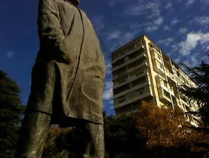

Lass den Sommer nie wieder
kommen
Let the Summer Never Come Again

Alexandre KoberidzeDE/GE 2017 – Mobiltelefon auf HD – 202 min – Georgisch
Grand Prix du Jury, Prix
Premier, FID Marseille 2017
B+K+S: Alexandre Koberidze
T: Giorgi Koberidze – P: Alexandre Koberidze (dffb) – V: Josephine Settemcher (dffb) – Mit Mate
Kevlishvili, Giorgi Bochorishvili
Ein
Film-flow, der nach Georgien führt. Ein junger Mann,
eine Audition für eine traditionelle Tanzkompanie, ein
geplatztes Treffen. Atempause. Not und Geldnot, Machenschaften.
Eine Liebe. Ein Abschied. Die Geschichte des Landes.
Vitaler impressionistischer Bilderstrom und aufsehenerregende
Hommage an den Stummfilm, der in niedriger Auflösung die
dokumentarischen Bilder mit der Fiktion eins werden lässt.
mittwoch 11 okt 20.30 uhr werkstattkino
TRAILER - LET THE SUMMER NEVER COME AGAIN from DFFB on Vimeo.
Alexandre Koberidze *1984
in Tiflis (Georgien). Studium an der Universität für Film und
Theater in Tiblis, danach Studium an der Deutschen Film- und
Fernseh-akademie Berlin (dffb).
Filme Es muss Liebe gewesen sein, und jetzt ist es vorbei 2012 – Deutschland im Krieg 2012 – Der Fall 2014 – Colophon 2015 – Der perfekte Zuschauer 2017
Filme Es muss Liebe gewesen sein, und jetzt ist es vorbei 2012 – Deutschland im Krieg 2012 – Der Fall 2014 – Colophon 2015 – Der perfekte Zuschauer 2017